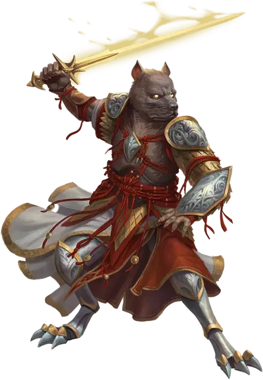

Архонт-гончая
Hound Archon
Средний Небожитель, законно-добрый

Класс Доспеха 15 (природный доспех)
Хиты 65 (10к8 + 20)
Скорость 40 футов
| мод | спас | ||
|---|---|---|---|
| СИЛ | 18 | +4 | +4 |
| ЛОВ | 12 | +1 | +1 |
| ТЕЛ | 15 | +2 | +2 |
| мод | спас | ||
|---|---|---|---|
| ИНТ | 11 | +0 | +2 |
| МДР | 14 | +2 | +4 |
| ХАР | 15 | +2 | +2 |
Навыки Восприятие +6, Проницательность +4, Скрытность +3
Иммунитет к урону электричество
Иммунитет к состояниям истощение, паралич
Чувства тёмное зрение 120 футов, пассивное Восприятие 16
Языки Все
Опасность 4 (1100 опыта)
Бонус мастерства +2
Особенности
Аура угрозы. Пока архонт дееспособен, каждое существо по выбору архонта, начинающее свой ход в пределах 20 футов от него, должно совершить спасбросок Мудрости Сл 12. В случае провала существо становится испуганным до начала своего следующего хода. При успешном спасброске существо становится невосприимчивым к Ауре угрозы всех архонтов на 24 часа.
Действия
Мультиатака. Архонт совершает две атаки Укусом. Он может заменить одну из атак атакой Сияющим клинком.
Укус. Рукопашная атака оружием: +6 к попаданию, досягаемость 5 футов, одна цель. Попадание: 7 (1к6 + 4) колющего урона . Если цель — существо Большого или меньше размера, она должна преуспеть в спасброске Силы Сл 14, иначе она будет сбита с ног.
Сияющий клинок (только в истинной форме). Рукопашная атака оружием: +6 к попаданию, досягаемость 5 футов, одна цель. Попадание: 11 (2к6 + 4) урона излучением.
Использование заклинаний. Архонт накладывает одно из следующих заклинаний, не нуждаясь в материальных компонентах, используя Харизму в качестве базовой характеристики:
• Неограниченно: обнаружение зла и добра [detect evil and good]
• 1/день каждое: подмога [aid], вечный огонь [continual flame]
Телепорт. Архонт телепортируется вместе со всем снаряжением, которое он носит или несёт, в незанятое пространство, которое он видит в пределах 120 футов от себя.
Бонусные действия
Изменение формы. Архонт магическим образом превращается в любую собаку или волка Среднего или Большого размера, сохраняя при этом свои игровые статистики (кроме размера и он не может совершать атаки Сияющим клинком). Архонт возвращается в свою истинную форму, если его хиты уменьшены до 0 или если он использует для этого бонусное действие.
Описание
Архонты — обитатели Семи Небес горы Селестии. Созданные силами порядка и доброжелательности, архонты защищают свой дом от вторжений Исчадий и защищают тех, кому угрожают злые силы. Архонты — опытные коммуникаторы, способные говорить на всех языках мультивселенной. Вступая в бой, они предпочитают подчинять врагов. Однако в борьбе против Исчадий архонты являются яростными бойцами, проявляющими праведную месть Горы Селестии, поражающей нечестивцев.
Форма каждого архонта соответствует его месту в Небесной иерархии. В бою архонты излучают ярость Верхних планов, поддерживая своих союзников и запугивая врагов.
Архонт-гончая
Архонты-гончии — пехотинцы горы Селестии, которым поручено защищать невинных и беспомощных. Верные защитники, эти двуногие воины владеют сияющими клинками и могут принимать собачьи формы, что позволяет им незаметно охранять мирные сообщества, как собаки и волки.